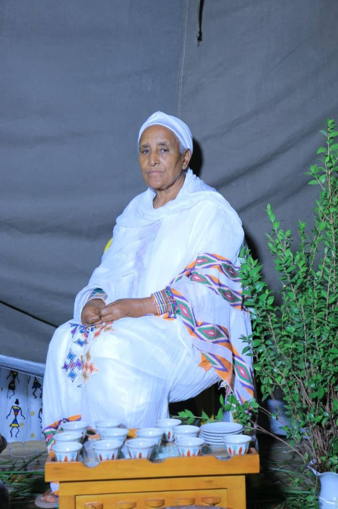
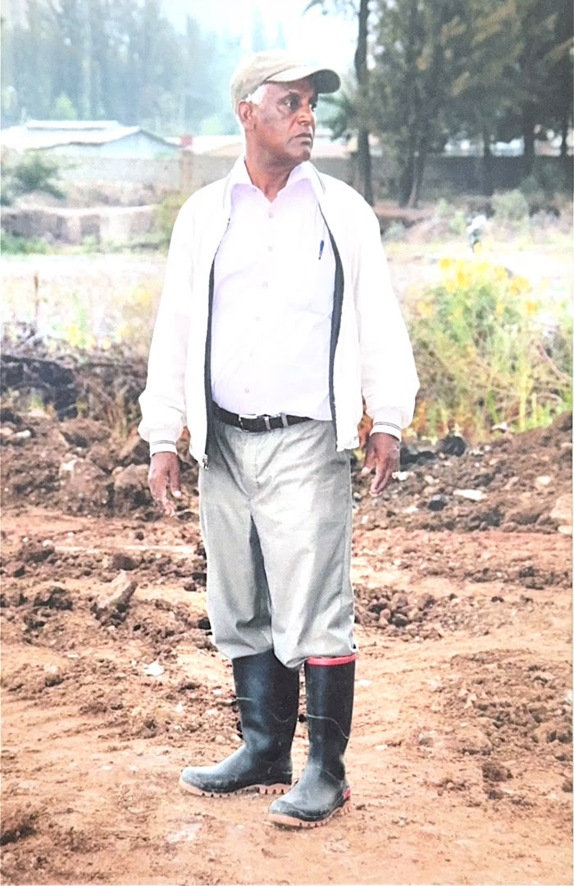
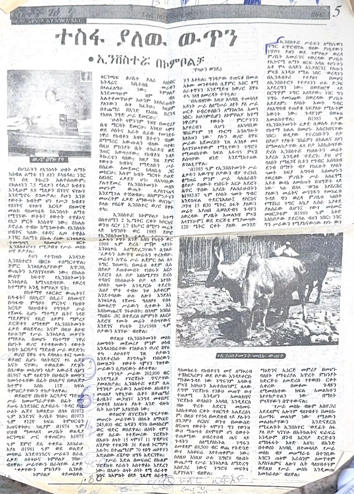
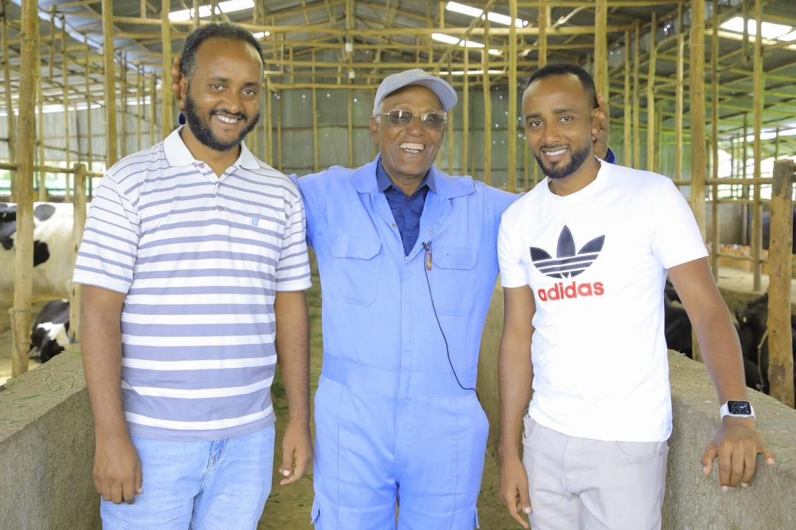

Project photo
[Project Name 1]
[Brief description of this new venture.]
Our story, our values, our mission, and why we do what we do.
Yenai Dairy Farm began with a vision: not simply to build a business, but to create something meaningful for a family, for Kombolcha, and for the wider Amhara region.
In 1990, during an interview, Shewaye Teka, one of the founders of the farm, shared the story of how that vision began.
Shewaye was an animal lover from northern Wollo. Her interest in animal husbandry started long before Yenai Dairy Farm existed. She first bought two cows and began raising them at home. As the number of cattle grew from two to three and then four, her neighbours began complaining about the smell. Rather than giving up, Shewaye rented another house where she could keep the animals.
What began almost as a personal interest gradually became something much bigger.

Shewaye Teka, Co-Founder

Shiferaw Girisil, Co-Founder
Shewaye shared her idea with her husband, Shiferaw Girisil, who was equally passionate about animals and open to turning their shared interest into a business. The couple decided to take their hobby seriously and establish a formal farm.
They started with just eight cows.
The decision came at a time when livestock resources in the Amhara region were enormous, but modern animal husbandry and livestock development had received far less attention than crop production. The region had millions of cattle, sheep and goats, yet much of the sector remained traditional, limiting its productivity and potential.
For Shewaye and Shiferaw, this represented an opportunity.
Rather than simply doing what everyone else was doing, they wanted to build something different: a modern farm that could produce quality dairy products while also contributing to the community around them.
They obtained their business licence and began developing the farm on 1.7 hectares of land near the Borkena River, starting in Ginbot 1985 E.C.
The beginning was far from easy.
They faced challenges with land, access roads, and infrastructure. At times, the Borkena River would wash away sections of land, making it even more difficult to develop and access the farm. But they continued to push forward.
As she described it,
"አህያ ሞተ ተብሎ ከመንገድ አይቀርም"
The journey did not stop simply because it was difficult.
On Yekatit 23, 1988 E.C., the farm officially began providing its services.
The initial project study was estimated at 202,800 birr, and the founders secured 245,000 birr from Dashen Bank to support the development of the farm. The first facilities included a calf house, storage area, guest house, and restroom, all developed as part of the early farm infrastructure.
From its beginnings with eight cows, the farm continued to grow.
By 1990, it had 15 cows, 11 calves, 36 oxen for sale, and around 70 sheep, employing seven permanent workers and five temporary workers.

Original 1990 newspaper feature on the farm's founding story
But Yenai was never only about the number of animals.
Shewaye wanted the farm to serve the people of Kombolcha. The farm began supplying fresh milk directly to customers through home delivery and its milk house, ወተት ቤት, making dairy products more accessible to the local community.
The farm also began supporting nearby farmers by providing agricultural services and assistance where possible, including access to resources and services that could help local farmers improve their own production.
Community support became an important part of the farm's identity.
In 1990, they constructed a water well costing 8,500 birr, created to support the surrounding community and provide access to water.
For Shewaye and Shiferaw, building a farm meant building something that could grow alongside the community.

Ermias Shiferaw, Today's Leadership
What started with a few cows, a family passion, and a simple idea became the foundation of a business that has continued across generations.
Today, Yenai Dairy Farm has grown from those first eight cows to a herd of more than 150. The farm is now being led by their son, Ermias Shiferaw, who is carrying the family legacy into its next chapter. Under his leadership, Yenai is modernizing its infrastructure, adopting modern farming tools and practices, and expanding its operations to serve Kombolcha and communities beyond. What began as a family's passion for animals has grown into a lasting family enterprise: one that continues to evolve while remaining rooted in the community that helped shape it.
The principles that guide every decision on the farm, every day.
[Describe your commitment to the health and humane treatment of the herd.]
[Describe your quality standards — from feed to milking to final product.]
[Describe how 30+ years of practice has shaped reliable, trusted output.]
[Describe the farm's relationship with the local community and customers.]
[Explain the deeper reason the farm exists — e.g. bringing high-quality, trusted dairy to Northern Ethiopian families, supporting local livelihoods, preserving farming traditions, or building something to pass on to the next generation.]
Discover Our FarmNew ventures we're building as we grow the farm.
[Brief description of this new venture.]
[Brief description of this new venture.]
[Brief description of this new venture.]